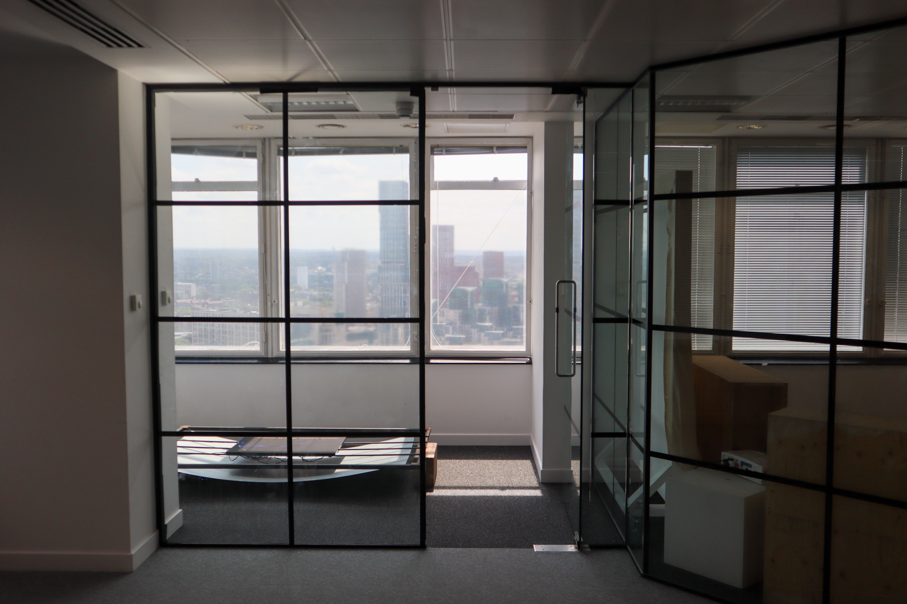

Memory 6.jpg What lies beneath - 2025
Led Panels, Steel
Finding moments of poetry from flickr titles
Made witht he flickr foundation, generative algorythens seach out poetry, finding collections of flickr photos using the api, and tries to arrange